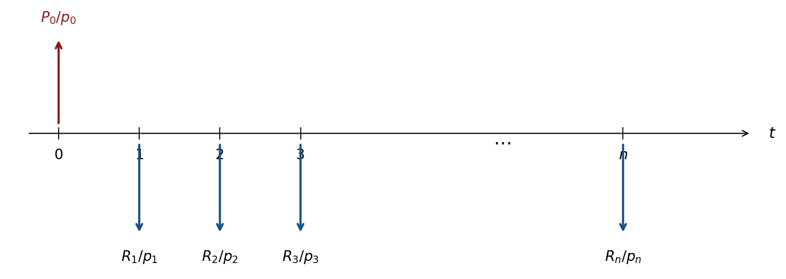

6 Formas de Cotar a Taxa de Juros
6.1 Objetivo
Este capítulo tem dois objetivos complementares: (1) distinguir taxa nominal de taxa efetiva; e (2) introduzir o conceito de taxa real (descontada a inflação). Confundir essas cotações é fonte frequente de erro em contratos, projeções financeiras e análise de investimentos.
6.2 Convenções de Contagem de Dias
| Convenção | Ano-base | Mês-base |
|---|---|---|
| Dias corridos | 360 dias | 30 dias |
| Dias úteis | 252 dias úteis | 21 dias úteis |
NoteNota
Na prática, devido a feriados, nem todos os meses têm o mesmo número de dias úteis. A estratégia correta é sempre utilizar os dias exatos do período.
- HP 12C: calcula dias efetivos entre duas datas (
g ΔDYS), base 360 ou 365 dias. - Excel:
DIAS360(corridos) ouDIATRABALHOTOTAL(úteis, requer tabela de feriados).
6.3 Taxa Nominal vs. Taxa Efetiva
TipDefinição
A taxa nominal é uma taxa anunciada para um período de referência que não corresponde diretamente à capitalização efetiva. Por convenção, ela é proporcional à subperiodização.
A taxa efetiva é a taxa que de fato remunera o capital levando em conta a capitalização real no período analisado.
Se a taxa nominal anual é \(j\) com capitalização \(m\) vezes por ano, a taxa efetiva anual é:
\[i_{\text{ef}} = \left(1 + \frac{j}{m}\right)^m - 1.\]
Equivalência de taxas
O princípio de equivalência (Capítulo 1) aplica-se diretamente:
\[(1 + i_1)^{n_1/360} = (1 + i_2)^{n_2/360}.\]
Para converter entre dias corridos e dias úteis, usa-se o número real de dias do período.
6.4 Taxa de Juros Real
Motivação
Até aqui ignoramos a inflação (variação geral do nível de preços). Uma taxa de juros nominal de \(12\%\) com inflação de \(8\%\) não rende \(12\%\) em termos de poder de compra real.
Derivação da Equação de Fisher
Considere um ativo de preço \(P_0\) hoje e \(P_1 = P_0(1+\pi)\) no próximo período (onde \(\pi\) é a inflação). Um investimento \(V_0\) cresce para \(V_1 = V_0(1+i)\) em termos nominais. O poder de compra real ao final é:
\[\frac{V_1}{P_1} = \frac{V_0(1+i)}{P_0(1+\pi)} = \frac{V_0}{P_0} \cdot \frac{1+i}{1+\pi}.\]
Definindo a taxa de retorno real \(r\) como \(1 + r = \frac{1+i}{1+\pi}\):
ImportantResultado — Equação de Fisher
\[\boxed{1 + r = \frac{1+i}{1+\pi}} \qquad\Leftrightarrow\qquad r = \frac{i - \pi}{1 + \pi}.\]
Aproximação (para \(i\) e \(\pi\) pequenos): \(r \approx i - \pi\).
Taxa real com capitalização contínua
No regime contínuo, com taxas nominais \(r_{\text{nom}}\) e inflação \(\pi_c\) (ambas contínuas):
\[r_{\text{real}} = r_{\text{nom}} - \pi_c.\]
A subtração simples é exata em tempo contínuo — não há o termo \(r\pi\) de correção.
Caso mais realista: inflação variável
Se a inflação \(\pi_t\) varia a cada período \(t = 1, \ldots, n\):
\[(1+r)^n = \frac{(1+i)^n}{\prod_{t=1}^n(1+\pi_t)}, \qquad 1 + r = \frac{(1+i)}{\left[\prod_{t=1}^n(1+\pi_t)\right]^{1/n}}.\]
6.5 Fluxo de Caixa Real
Ao avaliar um projeto com fluxos em termos nominais \(R_t\), a alternativa é trabalhar em termos reais:
\[R_t^{\text{real}} = \frac{R_t}{(1+\pi_1)(1+\pi_2)\cdots(1+\pi_t)} \approx \frac{R_t}{(1+\bar\pi)^t},\]
e descontar pela taxa real \(r\):
\[P = \sum_{t=1}^n \frac{R_t^{\text{real}}}{(1+r)^t}.\]
NoteNota
O resultado é o mesmo se descontarmos o fluxo nominal pela taxa nominal \(i\), desde que a taxa \(i\) e os fluxos \(R_t\) sejam consistentes (ambos nominais ou ambos reais). Em geral usa-se o IPCA/FGV como índice de reajuste \(\pi_t\).
6.6 Perpetuidade com Inflação (Fisher + Gordon)
Para uma perpetuidade cujos pagamentos crescem pela inflação \(\pi\) (série geométrica com \(\alpha = \pi\)):
\[P = \frac{R_1}{i - \pi}.\]
Pela equação de Fisher, \(i - \pi \approx r(1+\pi)\), logo:
ImportantResultado
A perpetuidade nominal crescente à inflação \(\pi\) vale o mesmo que a perpetuidade real uniforme com fluxo \(R^{\text{real}}\) descontada pela taxa real \(r\):
\[P = \frac{R_1}{i-\pi} = \frac{R^{\text{real}}}{r}.\]
TipExemplo moderno — Tesouro IPCA+ como perpetuidade real (2025)
O título NTN-B paga cupom semestral de \(6\%\) a.a. mais correção pelo IPCA. Para uma NTN-B de prazo muito longo (hipotética), com taxa real demandada \(r = 6\%\) a.a. e cupom semestral \(c = 3\%\) sobre o valor de face de R$ 1.000 (corrigido pelo IPCA):
\[P \approx \frac{30}{0{,}03} = \text{R\$ }1.000 \qquad\text{(à par, quando a taxa de mercado = cupom).}\]
Se o mercado exige \(r = 7\%\) a.a., o preço cai abaixo do par (deságio) — o investidor compra mais barato e garante \(7\%\) real ao ano até o vencimento.